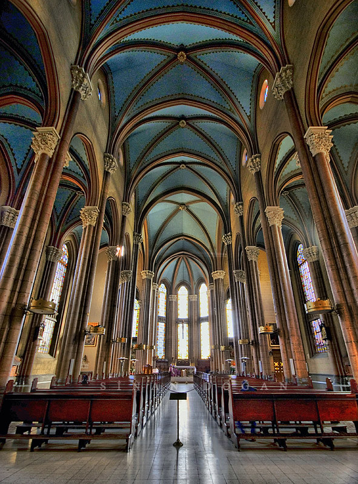

Beyoğlu
1-Galata Kulesi
Galata Kulesi, Bizans İmparatorluğu döneminde, Galata semtinin Ceneviz kolonisi olduğu on dördüncü yüzyıl ortalarında, Cenevizliler tarafından, Galata surlarının bir parçası olarak inşa edilmiştir. Osmanlı döneminde bir süre zindan olarak kullanıldıktan sonra, yangın gözetleme kulesine çevrilmiştir. Zaman zaman deprem ve yangınlarla tahrip olan kule, Osmanlı döneminde birkaç kez tadilat geçirmiştir. 1960’lı yıllara gelindiğinde bir hayli harap durumda olan kule, İstanbul Belediyesi tarafından restore edilerek ziyarete açılmıştır. Galata Kulesi 2020 yılında Vakıflar Genel Müdürlüğü tarafından yeniden restore edilmiş, sonradan eklenen betonarme unsurlar ve kafeterya kaldırılarak, müze işleviyle kapılarını ziyaretçilere yeniden açmıştır.

2-İstiklal Caddesi
İstiklal Caddesi, İstanbul'un en ünlü ve canlı caddelerinden biridir. Genellikle alışveriş, eğlence, kültür ve tarih açısından zengin bir deneyim sunar. Cadde boyunca birçok mağaza, restoran, kafe, bar, sinema, tiyatro ve müze gibi çeşitli mekanlar bulunur. Ayrıca, İstiklal Caddesi, İstanbul'un önemli tarihi ve turistik yerlerine de yakınlığıyla bilinir.
3-Miniatürk
Miniatürk, Türkiye'nin ve dünyanın farklı bölgelerinden seçilmiş tarihi ve turistik yapıların minyatürlerinin sergilendiği bir müzedir. Müzede, minyatürler aracılığıyla Türkiye'nin farklı bölgelerinin ve dünyanın ünlü yapılarının detaylı bir şekilde görülebilmesi amaçlanmıştır. İstanbul'daki tarihi eserlerden, Anadolu'daki antik kentlere, Türkiye'nin çeşitli bölgelerine ve dünyanın farklı ülkelerine kadar birçok minyatür sergilenmektedir.

4-Narmanlı Han
Narmanlı Han, İstiklal Caddesi üzerinde yer alan tarihi bir yapıdır. Han, 19. yüzyılda inşa edilmiş olup Osmanlı mimarisinin güzel örneklerinden biridir. Günümüzde han binası restore edilerek, işletmelerin bulunduğu bir alışveriş merkezi olarak kullanılmaktadır. Hanın çevresinde birçok mağaza, kafe, restoran ve sanat galerisi bulunmaktadır.
5-St Antuan Kilisesi
St. Antoine Kilisesi, 19. yüzyılda İstanbul'daki Fransız Katolik topluluğunun ibadet yeri olarak inşa edilmiştir. Kilise, Fransız Gotik tarzında tasarlanmış olup dikkat çekici bir mimariye sahiptir. İç mekanı da oldukça etkileyicidir ve ziyaretçilere tarihi ve ruhani bir atmosfer sunmaktadır. Kilise, İstanbul'daki Fransız Katolik cemaatinin merkezi olarak hizmet vermektedir.
6-Çiçek Pasajı
Çiçek Pasajı, 19. yüzyılın sonlarında inşa edilmiş bir pasajdır. Başlangıçta çiçekçilerin bulunduğu bir mekan olarak kullanılan pasaj, zamanla restoranlar ve kafelerle dönüştü. Günümüzde, ziyaretçilerine çeşitli restoran seçenekleri, canlı müzik performansları ve tarihi atmosferiyle ünlü bir mekan olarak hizmet vermektedir. Çiçek Pasajı, İstanbul'un turistik ve eğlence merkezlerinden biridir.
7-Meryem Ana Kilisesi
Beyoğlu’nda yer alan Meryem Ana Kilisesi, isminde de yer aldığı üzere Meryem Ana’ya atfedilmiştir. Pera bölgesindeki en eski kilisedir. Sultan III. Selim'in izniyle mimar Hacı Komninos Kalfa tarafından inşa edilmiş ve açılışı 18 Eylül 1804 tarihinde gerçekleştirilmiştir. Daha sonraki zamanlarda genişletilmiş ve bugünkü beş nefli bazilika şeklini almıştır.
İstiklal caddesi yönünde karakteristik bir çan kulesi bulunmaktadır. Kariye müzesindekine benzeyen ikonaların yer aldığı ahşap templon ve freskleri ile dikkat çekmektedir. Kilise, yakındaki İngiliz Konsolosluğu'na 20 Kasım 2003'te düzenlenen bombalı saldırı nedeniyle ağır hasar gördü ve 21 Kasım 2009'da köklü yenileme çalışmaları sonrasında yeniden açıldı.

8-Cihangir Camii
Cihangir Camii, Beyoğlu, Pürtelaş mahallesinde, Cihangir yokuşundadır. İlk cami Kanuni Sultan Süleyman tarafından Şehzade Cihangir için Mimar Sinan'a yaptırılmıştı (1559). Sonra cami deprem ve yangınlarda defalarca yıkılıp yapılmış, en son 1889'da II. Abdülhamid yenilemiştir.
Bugünkü cami dikdörtgen planda, eğimli arazide kurulmuştur. İstinat duvarlı avlunun iki kapısı vardır. 14 m çaplı kubbenin 4 kemerinin köşeleri kulelidir. Kemer duvarları geniş yelpaze pencerelerle kaplıdır ve üst taraflar süslemelidir. Kubbe ve pandantifler kurşun kaplıdır.
Caminin çeşmesi duvara bitişiktir. Hazirede tekke şeyhi Hasan Cihangiri yatmaktadır. Doğu duvarında bir sarnıç ve kuzey duvarında bir mermer levha üzerinde kabartma işi bulunmaktadır.
Son cemaat yeri kapalı olup iki yanı kubbe, ortası çapraz tonozdur. Caminin iki köşesinde tek şerefeli ikiz minareleri vardır. Cami, Vakıflar Genel Müdürlüğünce 2015 yılında restorasyona alınmış 3 yıl süren restorasyon çalışmalarının ardından 2018 yılında tekrar ibadete açılmıştır. Restorasyon sürecinde 1868-1890 yılları arasına tarihlenen otuz dokuz hüsnü hat levhası hırsızlık vakaları sebebiyle camiden alınıp müzeye kaldırılmıştır. Bu eserler Mustafa İzzet, Hâfız Ahmed Sünbülî, Sâmi, Râkım, Hasan Rızâ, Sabri, Şefik, Muhammed Fehmi, Muhammed Nazif, Nazif, Ârif, Mehmed Tâhir, Seyyid Ali, Alâeddin, Hasenî, Cerî, Mısrîzâde Ali Rızâ Üsküdârî ve Şevki gibi hattatlar tarafından yazılmıştır.
9-Komondo Merdivenleri
Kamondo Merdivenleri İstanbul'un Galata semtindeki Bankalar Caddesi ile Banker Sokağı'nı birleştiren art nouveau üslûplu merdivenlerdir. 1850'li yıllarda yapılan merdivenler bölgenin en önemli banker ailelerinden biri olan Kamondo Ailesinden Abraham Salomon Kamondo adına yaptırılmıştır. O zamanlar Banker Sokağı da Rue Camondo (Kamondo Sokağı) olarak bilinmekteydi.
10-Pera Palas Hotel
Pera Palas Hotel, 1892 yılında inşa edilen ve İstanbul'un önemli tarihî yapılarından biri olan bir oteldir. Otel, Osmanlı İmparatorluğu döneminde İstanbul'a gelen ünlü yabancı misafirlerin konakladığı prestijli bir mekân olarak hizmet vermiştir. Aynı zamanda, ünlü yazar Agatha Christie'nin "Doğu Ekspresinde Cinayet" adlı romanının yazıldığı yer olarak da bilinmektedir.
Pera Palas Hotel, tarihi ve etkileyici bir atmosfere sahiptir. Otelin iç mekânları, zarif bir şekilde döşenmiş odaları ve tarihî dokusunu koruyan detaylarıyla öne çıkar. Otel, günümüzde de lüks konaklama hizmetleri sunmaktadır ve ziyaretçilerine nostaljik bir deneyim yaşatmaktadır.
Pera Palas Hotel, İstiklal Caddesi'ne yakın konumda yer alır. Taksim Meydanı'na ve İstiklal Caddesi'ne yürüme mesafesinde bulunmaktadır. Toplu taşıma araçlarına kolay erişim sağlanabilir ve İstanbul'un diğer turistik ve tarihi bölgelerine ulaşmak için iyi bir konumdadır.
Nasıl Gidilir
Metroyla
İstanbul'da metro hatları geniş bir ağa sahiptir. Beyoğlu'na ulaşmak için M2 (Yenikapı-Hacıosman) hattını kullanabilirsiniz. Taksim Meydanı, Beyoğlu'nun en merkezi noktalarından biridir ve M2 hattının Taksim istasyonuna ulaşabilirsiniz.
Otobüsle
İstanbul'da birçok otobüs hattı Beyoğlu'na gider. Taksim Meydanı ve İstiklal Caddesi çevresinde bulunan otobüs duraklarından birine giderek, Beyoğlu'na otobüsle ulaşabilirsiniz. İstanbul Büyükşehir Belediyesi'nin resmi web sitesinden otobüs seferleri ve güzergahları hakkında bilgi alabilirsiniz.